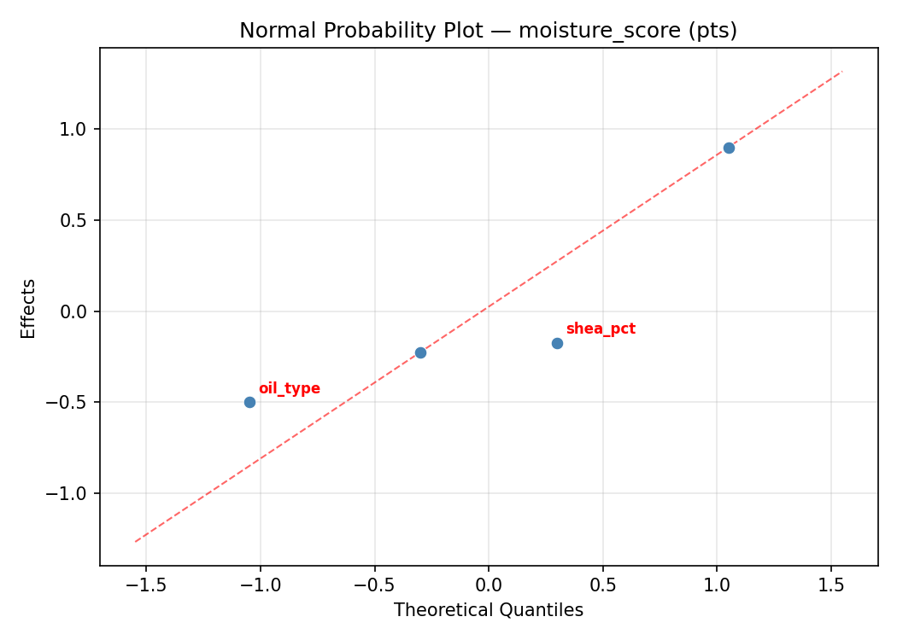
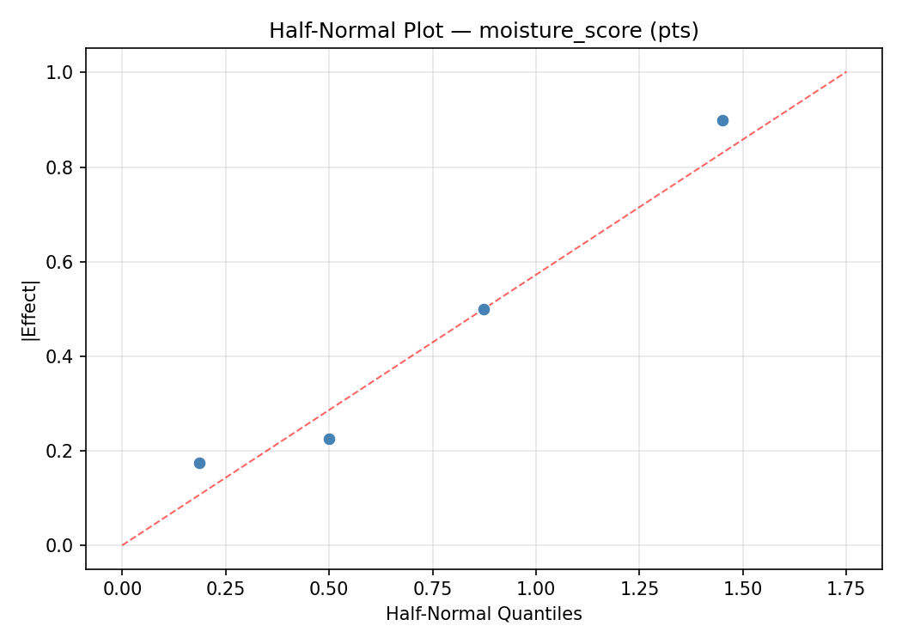
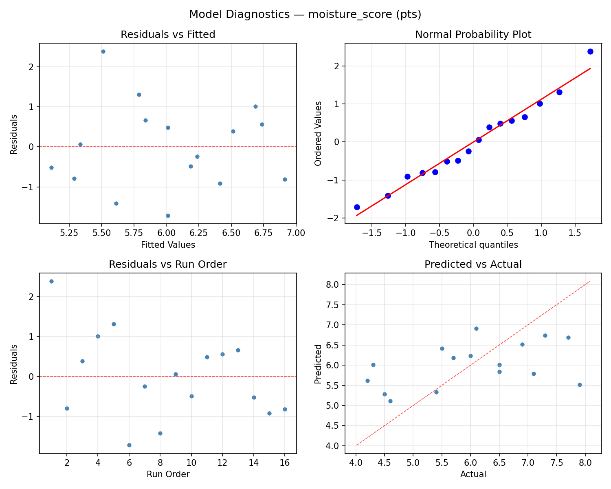
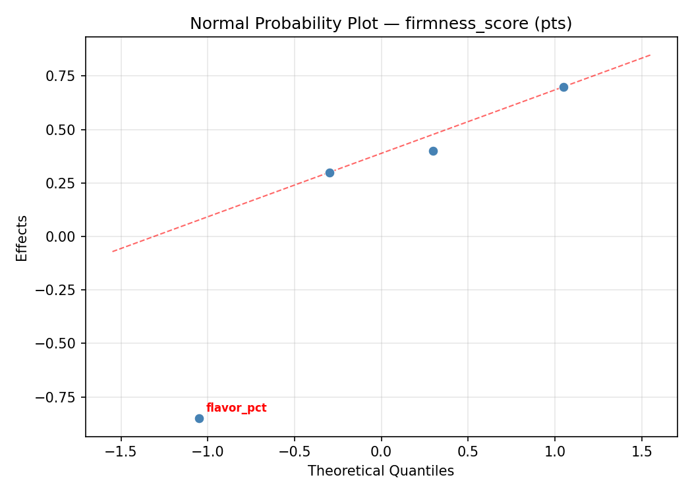
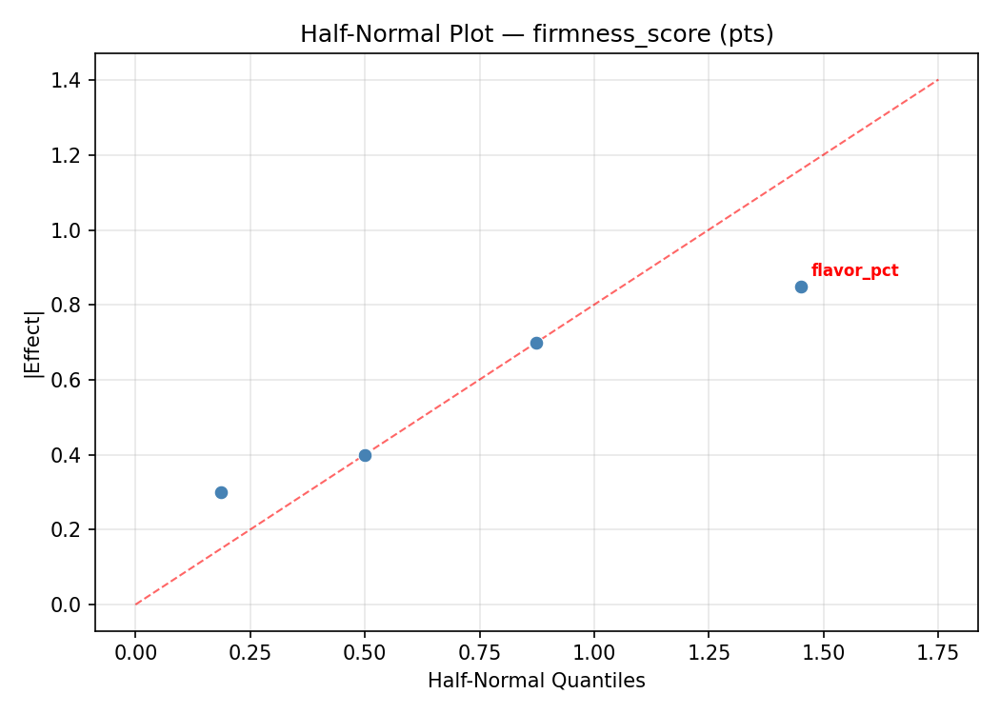
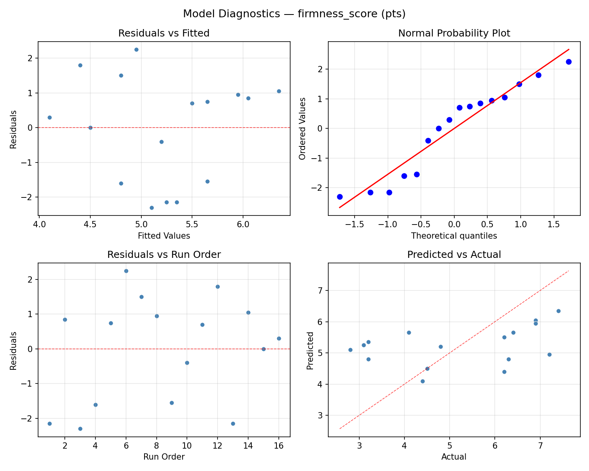

Summary
This experiment investigates lip balm texture formulation. Full factorial of beeswax ratio, shea butter ratio, oil type, and flavor load to maximize moisturizing feel and firmness.
The design varies 4 factors: beeswax pct (%), ranging from 15 to 30, shea pct (%), ranging from 10 to 30, oil type, ranging from coconut to jojoba, and flavor pct (%), ranging from 0.5 to 3.0. The goal is to optimize 2 responses: moisture score (pts) (maximize) and firmness score (pts) (maximize). Fixed conditions held constant across all runs include vitamin e = 1pct, container = tube.
A full factorial design was used to explore all 16 possible combinations of the 4 factors at two levels. This guarantees that every main effect and interaction can be estimated independently, at the cost of a larger experiment (16 runs).
Quadratic response surface models were fitted to capture potential curvature and factor interactions. The RSM contour plots below visualize how pairs of factors jointly affect each response.
Key Findings
For moisture score, the most influential factors were flavor pct (34.7%), oil type (29.5%), beeswax pct (21.1%). The best observed value was 7.9 (at beeswax pct = 30, shea pct = 10, oil type = coconut).
For firmness score, the most influential factors were shea pct (30.6%), flavor pct (29.0%), oil type (22.6%). The best observed value was 7.4 (at beeswax pct = 15, shea pct = 30, oil type = coconut).
Recommended Next Steps
- Consider whether any fixed factors should be varied in a future study.
Experimental Setup
Factors
| Factor | Low | High | Unit |
|---|
beeswax_pct | 15 | 30 | % |
shea_pct | 10 | 30 | % |
oil_type | coconut | jojoba | |
flavor_pct | 0.5 | 3.0 | % |
Fixed: vitamin_e = 1pct, container = tube
Responses
| Response | Direction | Unit |
|---|
moisture_score | ↑ maximize | pts |
firmness_score | ↑ maximize | pts |
Configuration
{
"metadata": {
"name": "Lip Balm Texture Formulation",
"description": "Full factorial of beeswax ratio, shea butter ratio, oil type, and flavor load to maximize moisturizing feel and firmness"
},
"factors": [
{
"name": "beeswax_pct",
"levels": [
"15",
"30"
],
"type": "continuous",
"unit": "%"
},
{
"name": "shea_pct",
"levels": [
"10",
"30"
],
"type": "continuous",
"unit": "%"
},
{
"name": "oil_type",
"levels": [
"coconut",
"jojoba"
],
"type": "categorical",
"unit": ""
},
{
"name": "flavor_pct",
"levels": [
"0.5",
"3.0"
],
"type": "continuous",
"unit": "%"
}
],
"fixed_factors": {
"vitamin_e": "1pct",
"container": "tube"
},
"responses": [
{
"name": "moisture_score",
"optimize": "maximize",
"unit": "pts"
},
{
"name": "firmness_score",
"optimize": "maximize",
"unit": "pts"
}
],
"settings": {
"operation": "full_factorial",
"test_script": "use_cases/222_lip_balm_texture/sim.sh"
}
}
Experimental Matrix
The Full Factorial Design produces 16 runs. Each row is one experiment with specific factor settings.
| Run | beeswax_pct | shea_pct | oil_type | flavor_pct |
|---|
| 1 | 15 | 30 | jojoba | 3.0 |
| 2 | 30 | 10 | coconut | 3.0 |
| 3 | 15 | 30 | coconut | 3.0 |
| 4 | 15 | 30 | jojoba | 0.5 |
| 5 | 30 | 30 | jojoba | 0.5 |
| 6 | 30 | 10 | jojoba | 0.5 |
| 7 | 30 | 30 | coconut | 0.5 |
| 8 | 30 | 10 | coconut | 0.5 |
| 9 | 15 | 10 | coconut | 3.0 |
| 10 | 15 | 10 | jojoba | 0.5 |
| 11 | 30 | 30 | coconut | 3.0 |
| 12 | 30 | 30 | jojoba | 3.0 |
| 13 | 15 | 30 | coconut | 0.5 |
| 14 | 30 | 10 | jojoba | 3.0 |
| 15 | 15 | 10 | coconut | 0.5 |
| 16 | 15 | 10 | jojoba | 3.0 |
Step-by-Step Workflow
1
Preview the design
$ python doe.py info --config use_cases/222_lip_balm_texture/config.json
2
Generate the runner script
$ python doe.py generate --config use_cases/222_lip_balm_texture/config.json \
--output use_cases/222_lip_balm_texture/results/run.sh --seed 42
3
Execute the experiments
$ bash use_cases/222_lip_balm_texture/results/run.sh
4
Analyze results
$ python doe.py analyze --config use_cases/222_lip_balm_texture/config.json
5
Get optimization recommendations
$ python doe.py optimize --config use_cases/222_lip_balm_texture/config.json
6
Multi-objective optimization
With 2 competing responses, use --multi to find the best compromise via Derringer–Suich desirability.
$ python doe.py optimize --config use_cases/222_lip_balm_texture/config.json --multi
7
Generate the HTML report
$ python doe.py report --config use_cases/222_lip_balm_texture/config.json \
--output use_cases/222_lip_balm_texture/results/report.html
Features Exercised
| Feature | Value |
|---|
| Design type | full_factorial |
| Factor types | continuous (3), categorical (1) |
| Arg style | double-dash |
| Responses | 2 (moisture_score ↑, firmness_score ↑) |
| Total runs | 16 |
Analysis Results
Generated from actual experiment runs using the DOE Helper Tool.
Response: moisture_score
Top factors: flavor_pct (34.7%), oil_type (29.5%), beeswax_pct (21.1%).
ANOVA
| Source | DF | SS | MS | F | p-value |
|---|
| Source | DF | SS | MS | F | p-value |
| beeswax_pct | 1 | 1.0000 | 1.0000 | 0.871 | 0.3934 |
| shea_pct | 1 | 0.4900 | 0.4900 | 0.427 | 0.5423 |
| oil_type | 1 | 1.9600 | 1.9600 | 1.708 | 0.2481 |
| flavor_pct | 1 | 2.7225 | 2.7225 | 2.373 | 0.1841 |
| beeswax_pct*shea_pct | 1 | 0.7225 | 0.7225 | 0.630 | 0.4635 |
| beeswax_pct*oil_type | 1 | 0.0625 | 0.0625 | 0.054 | 0.8247 |
| beeswax_pct*flavor_pct | 1 | 5.2900 | 5.2900 | 4.610 | 0.0846 |
| shea_pct*oil_type | 1 | 0.0025 | 0.0025 | 0.002 | 0.9646 |
| shea_pct*flavor_pct | 1 | 1.2100 | 1.2100 | 1.054 | 0.3516 |
| oil_type*flavor_pct | 1 | 2.5600 | 2.5600 | 2.231 | 0.1955 |
| Error | 5 | 5.7375 | 1.1475 | | |
| Total | 15 | 21.7575 | 1.4505 | | |
Pareto Chart

Main Effects Plot

Normal Probability Plot of Effects

Half-Normal Plot of Effects

Model Diagnostics

Response: firmness_score
Top factors: shea_pct (30.6%), flavor_pct (29.0%), oil_type (22.6%).
ANOVA
| Source | DF | SS | MS | F | p-value |
|---|
| Source | DF | SS | MS | F | p-value |
| beeswax_pct | 1 | 0.3025 | 0.3025 | 0.274 | 0.6229 |
| shea_pct | 1 | 0.9025 | 0.9025 | 0.818 | 0.4072 |
| oil_type | 1 | 0.4900 | 0.4900 | 0.444 | 0.5346 |
| flavor_pct | 1 | 0.8100 | 0.8100 | 0.734 | 0.4306 |
| beeswax_pct*shea_pct | 1 | 0.1600 | 0.1600 | 0.145 | 0.7189 |
| beeswax_pct*oil_type | 1 | 0.0025 | 0.0025 | 0.002 | 0.9639 |
| beeswax_pct*flavor_pct | 1 | 23.5225 | 23.5225 | 21.326 | 0.0057 |
| shea_pct*oil_type | 1 | 0.0225 | 0.0225 | 0.020 | 0.8920 |
| shea_pct*flavor_pct | 1 | 4.2025 | 4.2025 | 3.810 | 0.1084 |
| oil_type*flavor_pct | 1 | 4.0000 | 4.0000 | 3.626 | 0.1152 |
| Error | 5 | 5.5150 | 1.1030 | | |
| Total | 15 | 39.9300 | 2.6620 | | |
Pareto Chart

Main Effects Plot

Normal Probability Plot of Effects

Half-Normal Plot of Effects

Model Diagnostics

Response Surface Plots
3D surfaces fitted with quadratic RSM. Red dots are observed data points.
firmness score beeswax pct vs flavor pct

firmness score beeswax pct vs shea pct

firmness score shea pct vs flavor pct

moisture score beeswax pct vs flavor pct

moisture score beeswax pct vs shea pct

moisture score shea pct vs flavor pct

Multi-Objective Optimization
When responses compete, Derringer–Suich desirability finds the best compromise.
Each response is scaled to a 0–1 desirability, then combined via a weighted geometric mean.
Overall Desirability
D = 0.7609
Per-Response Desirability
| Response | Weight | Desirability | Predicted | Dir |
|---|
moisture_score |
1.5 |
|
7.30 0.8071 7.30 pts |
↑ |
firmness_score |
1.5 |
|
6.20 0.7174 6.20 pts |
↑ |
Recommended Settings
| Factor | Value |
|---|
beeswax_pct | 15 % |
shea_pct | 30 % |
oil_type | jojoba |
flavor_pct | 0.5 % |
Source: from observed run #12
Trade-off Summary
Sacrifice = how much worse than single-objective best.
| Response | Predicted | Best Observed | Sacrifice |
|---|
firmness_score | 6.20 | 7.40 | +1.20 |
Top 3 Runs by Desirability
| Run | D | Factor Settings |
|---|
| #5 | 0.7575 | beeswax_pct=30, shea_pct=10, oil_type=jojoba, flavor_pct=0.5 |
| #11 | 0.6618 | beeswax_pct=15, shea_pct=10, oil_type=jojoba, flavor_pct=3.0 |
Model Quality
| Response | R² | Type |
|---|
firmness_score | 0.0265 | linear |
Full Multi-Objective Output
============================================================
MULTI-OBJECTIVE OPTIMIZATION
Method: Derringer-Suich Desirability Function
============================================================
Overall desirability: D = 0.7609
Response Weight Desirability Predicted Direction
---------------------------------------------------------------------
moisture_score 1.5 0.8071 7.30 pts ↑
firmness_score 1.5 0.7174 6.20 pts ↑
Recommended settings:
beeswax_pct = 15 %
shea_pct = 30 %
oil_type = jojoba
flavor_pct = 0.5 %
(from observed run #12)
Trade-off summary:
moisture_score: 7.30 (best observed: 7.90, sacrifice: +0.60)
firmness_score: 6.20 (best observed: 7.40, sacrifice: +1.20)
Model quality:
moisture_score: R² = 0.3703 (linear)
firmness_score: R² = 0.0265 (linear)
Top 3 observed runs by overall desirability:
1. Run #12 (D=0.7609): beeswax_pct=15, shea_pct=30, oil_type=jojoba, flavor_pct=0.5
2. Run #5 (D=0.7575): beeswax_pct=30, shea_pct=10, oil_type=jojoba, flavor_pct=0.5
3. Run #11 (D=0.6618): beeswax_pct=15, shea_pct=10, oil_type=jojoba, flavor_pct=3.0
Full Analysis Output
=== Main Effects: moisture_score ===
Factor Effect Std Error % Contribution
--------------------------------------------------------------
flavor_pct 0.8250 0.3011 34.7%
oil_type -0.7000 0.3011 29.5%
beeswax_pct 0.5000 0.3011 21.1%
shea_pct 0.3500 0.3011 14.7%
=== ANOVA Table: moisture_score ===
Source DF SS MS F p-value
-----------------------------------------------------------------------------
beeswax_pct 1 1.0000 1.0000 0.871 0.3934
shea_pct 1 0.4900 0.4900 0.427 0.5423
oil_type 1 1.9600 1.9600 1.708 0.2481
flavor_pct 1 2.7225 2.7225 2.373 0.1841
beeswax_pct*shea_pct 1 0.7225 0.7225 0.630 0.4635
beeswax_pct*oil_type 1 0.0625 0.0625 0.054 0.8247
beeswax_pct*flavor_pct 1 5.2900 5.2900 4.610 0.0846
shea_pct*oil_type 1 0.0025 0.0025 0.002 0.9646
shea_pct*flavor_pct 1 1.2100 1.2100 1.054 0.3516
oil_type*flavor_pct 1 2.5600 2.5600 2.231 0.1955
Error 5 5.7375 1.1475
Total 15 21.7575 1.4505
=== Interaction Effects: moisture_score ===
Factor A Factor B Interaction % Contribution
------------------------------------------------------------------------
beeswax_pct flavor_pct -1.1500 37.4%
oil_type flavor_pct 0.8000 26.0%
shea_pct flavor_pct 0.5500 17.9%
beeswax_pct shea_pct 0.4250 13.8%
beeswax_pct oil_type -0.1250 4.1%
shea_pct oil_type -0.0250 0.8%
=== Summary Statistics: moisture_score ===
beeswax_pct:
Level N Mean Std Min Max
------------------------------------------------------------
15 8 5.7625 1.3298 4.2000 7.7000
30 8 6.2625 1.0941 4.6000 7.9000
shea_pct:
Level N Mean Std Min Max
------------------------------------------------------------
10 8 5.8375 1.0183 4.3000 7.1000
30 8 6.1875 1.4147 4.2000 7.9000
oil_type:
Level N Mean Std Min Max
------------------------------------------------------------
coconut 8 6.3625 1.2386 4.5000 7.9000
jojoba 8 5.6625 1.1376 4.2000 7.7000
flavor_pct:
Level N Mean Std Min Max
------------------------------------------------------------
0.5 8 5.6000 1.3169 4.2000 7.9000
3.0 8 6.4250 0.9925 4.6000 7.7000
=== Main Effects: firmness_score ===
Factor Effect Std Error % Contribution
--------------------------------------------------------------
shea_pct -0.4750 0.4079 30.6%
flavor_pct 0.4500 0.4079 29.0%
oil_type 0.3500 0.4079 22.6%
beeswax_pct -0.2750 0.4079 17.7%
=== ANOVA Table: firmness_score ===
Source DF SS MS F p-value
-----------------------------------------------------------------------------
beeswax_pct 1 0.3025 0.3025 0.274 0.6229
shea_pct 1 0.9025 0.9025 0.818 0.4072
oil_type 1 0.4900 0.4900 0.444 0.5346
flavor_pct 1 0.8100 0.8100 0.734 0.4306
beeswax_pct*shea_pct 1 0.1600 0.1600 0.145 0.7189
beeswax_pct*oil_type 1 0.0025 0.0025 0.002 0.9639
beeswax_pct*flavor_pct 1 23.5225 23.5225 21.326 0.0057
shea_pct*oil_type 1 0.0225 0.0225 0.020 0.8920
shea_pct*flavor_pct 1 4.2025 4.2025 3.810 0.1084
oil_type*flavor_pct 1 4.0000 4.0000 3.626 0.1152
Error 5 5.5150 1.1030
Total 15 39.9300 2.6620
=== Interaction Effects: firmness_score ===
Factor A Factor B Interaction % Contribution
------------------------------------------------------------------------
beeswax_pct flavor_pct 2.4250 51.1%
shea_pct flavor_pct -1.0250 21.6%
oil_type flavor_pct -1.0000 21.1%
beeswax_pct shea_pct 0.2000 4.2%
shea_pct oil_type -0.0750 1.6%
beeswax_pct oil_type 0.0250 0.5%
=== Summary Statistics: firmness_score ===
beeswax_pct:
Level N Mean Std Min Max
------------------------------------------------------------
15 8 5.3625 1.6995 3.1000 7.2000
30 8 5.0875 1.6651 2.8000 7.4000
shea_pct:
Level N Mean Std Min Max
------------------------------------------------------------
10 8 5.4625 1.5937 2.8000 7.4000
30 8 4.9875 1.7423 3.1000 6.9000
oil_type:
Level N Mean Std Min Max
------------------------------------------------------------
coconut 8 5.0500 1.8822 2.8000 7.4000
jojoba 8 5.4000 1.4462 3.2000 7.2000
flavor_pct:
Level N Mean Std Min Max
------------------------------------------------------------
0.5 8 5.0000 1.7550 2.8000 7.2000
3.0 8 5.4500 1.5838 3.1000 7.4000
Optimization Recommendations
=== Optimization: moisture_score ===
Direction: maximize
Best observed run: #1
beeswax_pct = 30
shea_pct = 10
oil_type = coconut
flavor_pct = 0.5
Value: 7.9
RSM Model (linear, R² = 0.1169, Adj R² = -0.2043):
Coefficients:
intercept +6.0125
beeswax_pct +0.2375
shea_pct -0.2000
oil_type +0.1500
flavor_pct +0.2000
RSM Model (quadratic, R² = 0.3203, Adj R² = -9.1948):
Coefficients:
intercept +1.2025
beeswax_pct +0.2375
shea_pct -0.2000
oil_type +0.1500
flavor_pct +0.2000
beeswax_pct*shea_pct -0.1000
beeswax_pct*oil_type -0.2750
beeswax_pct*flavor_pct -0.2250
shea_pct*oil_type +0.0875
shea_pct*flavor_pct +0.1375
oil_type*flavor_pct +0.3375
beeswax_pct^2 +1.2025
shea_pct^2 +1.2025
oil_type^2 +1.2025
flavor_pct^2 +1.2025
Curvature analysis:
shea_pct coef=+1.2025 convex (has a minimum)
beeswax_pct coef=+1.2025 convex (has a minimum)
oil_type coef=+1.2025 convex (has a minimum)
flavor_pct coef=+1.2025 convex (has a minimum)
Notable interactions:
oil_type*flavor_pct coef=+0.3375 (synergistic)
Predicted optimum (from linear model, at observed points):
beeswax_pct = 30
shea_pct = 10
oil_type = jojoba
flavor_pct = 3.0
Predicted value: 6.8000
Surface optimum (via L-BFGS-B, linear model):
beeswax_pct = 30
shea_pct = 10
oil_type = jojoba
flavor_pct = 3
Predicted value: 6.8000
Model quality: Weak fit — consider adding center points or using a different design.
Factor importance:
1. beeswax_pct (effect: 0.5, contribution: 30.2%)
2. shea_pct (effect: -0.4, contribution: 25.4%)
3. flavor_pct (effect: 0.4, contribution: 25.4%)
4. oil_type (effect: 0.3, contribution: 19.0%)
=== Optimization: firmness_score ===
Direction: maximize
Best observed run: #14
beeswax_pct = 15
shea_pct = 30
oil_type = coconut
flavor_pct = 0.5
Value: 7.4
RSM Model (linear, R² = 0.2761, Adj R² = 0.0129):
Coefficients:
intercept +5.2250
beeswax_pct -0.2375
shea_pct +0.5250
oil_type -0.3625
flavor_pct -0.4750
RSM Model (quadratic, R² = 0.4597, Adj R² = -7.1048):
Coefficients:
intercept +1.0450
beeswax_pct -0.2375
shea_pct +0.5250
oil_type -0.3625
flavor_pct -0.4750
beeswax_pct*shea_pct +0.3625
beeswax_pct*oil_type -0.3750
beeswax_pct*flavor_pct +0.3625
shea_pct*oil_type -0.1875
shea_pct*flavor_pct -0.0250
oil_type*flavor_pct -0.1375
beeswax_pct^2 +1.0450
shea_pct^2 +1.0450
oil_type^2 +1.0450
flavor_pct^2 +1.0450
Curvature analysis:
beeswax_pct coef=+1.0450 convex (has a minimum)
flavor_pct coef=+1.0450 convex (has a minimum)
shea_pct coef=+1.0450 convex (has a minimum)
oil_type coef=+1.0450 convex (has a minimum)
Notable interactions:
beeswax_pct*oil_type coef=-0.3750 (antagonistic)
beeswax_pct*flavor_pct coef=+0.3625 (synergistic)
beeswax_pct*shea_pct coef=+0.3625 (synergistic)
Predicted optimum (from linear model, at observed points):
beeswax_pct = 15
shea_pct = 30
oil_type = coconut
flavor_pct = 0.5
Predicted value: 6.8250
Surface optimum (via L-BFGS-B, linear model):
beeswax_pct = 15
shea_pct = 30
oil_type = coconut
flavor_pct = 0.5
Predicted value: 6.8250
Model quality: Weak fit — consider adding center points or using a different design.
Factor importance:
1. shea_pct (effect: 1.0, contribution: 32.8%)
2. flavor_pct (effect: -1.0, contribution: 29.7%)
3. oil_type (effect: -0.7, contribution: 22.7%)
4. beeswax_pct (effect: -0.5, contribution: 14.8%)